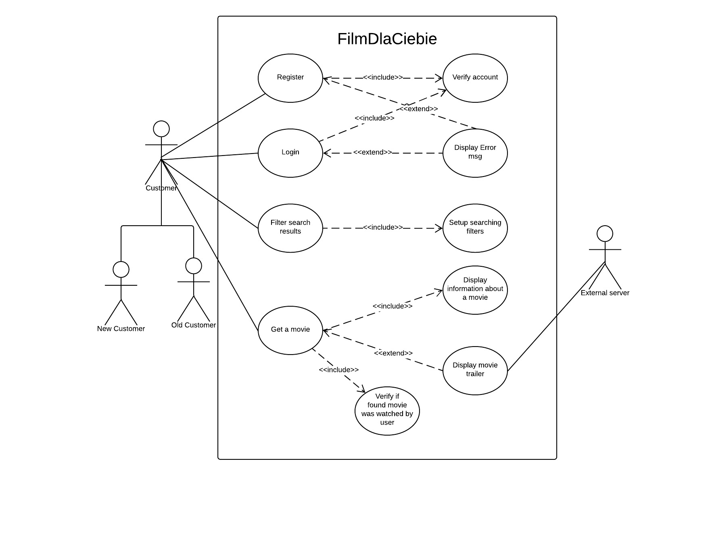

BAI-FilmDlaCiebie
Zadaniem aplikacji jest rozwiązanie problemu użytkowników z szybkim wyborem filmu/serialu do oglądnięcia. Użytkownik może dowolnie dostosować filtry wyszukiwania pod siebie wylosować film "na wieczór". Pełna funkcjonalność aplikacji dostępna jest po zalogowaniu na konto aplikacji lub przez media społecznościowe. Dostęp do aplikacji z ograniczonymi funkcjonalnościami jest możliwy bez zalogowania. Po zastosowaniu filtrów oraz wylosowaniu filmu użytkownik może losować dalej lub wyświetlić detale dotyczące wybranego filmu.
Zespół w składzie: Piotr Hereda (213701) - Kierownik zespołu,
Dariusz Lurka (213699)
Mateusz Sałapatek (213700)
Jakub Bąk (213904)
Grupa dziekańska:
WZISN2-1211
Diagram UML aplikacji
